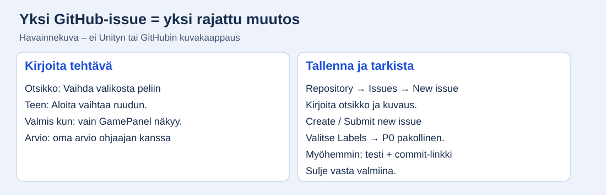
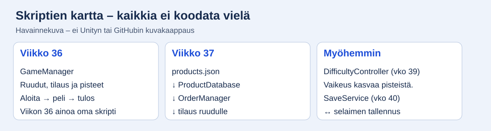

Viikko 35: suunnittele ohjaajan tuella
Tee ensin yksi esimerkki yhdessä ja seuraava itse. Tässä viikossa et vielä kirjoita kaikkia pelin skriptejä.
Valitse työvaihe
Työvaihe 35-1
Täytä omat suunnittelupäätökset
- Avaa pääohje → Suunnitelma (GDD). Lue esitäytetty konsepti ohjaajan kanssa. Sano omin sanoin: mitä pelaaja tekee?
- Täytä työnimi, tekijänimi ja tavoite. Kirjoita tavoite 2–3 virkkeellä. Kerro oma roolisi.
- Valitse ulkoasun tyyli ja grafiikan lähde. Ensimmäiseen versioon riittävät itse tehdyt väripinnat ja Unityn oletuspainikkeet. Kirjaa grafiikan lähde ja käyttölupa oman toteutuksesi mukaan.
- Valitse oikean ja väärän toimituksen pisteet sekä perustelu. Viikon 36 opetusesimerkki käyttää +10 ja 0 pistettä. Jos päätät toisin, muutat pistearvon omaan koodiisi ja testien odotuksiin.
- Kirjaa kierroksen pituus vain, jos se on sovittu asiakkaan kanssa. Tyhjä ASIAKAS-kenttä saa jäädä avoimeksi.
- Lataa gdd.md ja siirrä se project-docs-kansioon. Tee commit ja push. Näytä GitHubissa oleva tiedosto ohjaajalle.
Pysähdy ja tarkista: OMA-kentät sisältävät omat päätöksesi ja perustelusi. GDD on GitHubissa.
Jos ei onnistu: Jos et osaa valita, vertaa ohjaajan kanssa kahta konkreettista vaihtoehtoa. Älä kopioi esimerkkiperustelua, joka ei vastaa omaa peliäsi.
Työvaihe 35-2
Tee pieniä GitHub-tehtäviä

- Ota ensin pelattava kierros. Kirjoita paperille: rakenna ruudut, kytke Aloita, valitse kahvi, toimita ja näytä pisteet, testaa selaimessa. Nämä ovat rajattujen tehtävien esimerkkejä.
- Avaa oma repository selaimessa → Issues → New issue. Jos näkyy mallivalinta, valitse tyhjä issue. Kirjoita ensimmäinen otsikko: ”Vaihda valikosta peliruutuun”.
- Kirjoita kuvaus neljällä otsikolla: Miksi tarvitaan, Teen, Valmis kun, Arvio. Kuva näyttää yhden mallin. Kirjoita oma arvio; sovi ohjaajan kanssa enintään päivän tehtävistä.
- Paina Create tai Submit new issue. Avaa tehtävä uudelleen ja tarkista, että kuvaus tallentui.
- Tee ensimmäisestä ja toisesta featuresta kummastakin 3–5 rajattua tehtävää. Toisen featuren aiheita ovat esimerkiksi tuotetiedoston luonti, tuotedatan luku ja tilauksen arpominen. Et koodaa niitä vielä.
- Lisää pääohjeen mukaisesti myöhemmistä featureista yksi tehtävä kustakin. Asiakkaan muutostoivetta ei vielä arvata. Näytä lista ohjaajalle.
Pysähdy ja tarkista: Kahden ensimmäisen featuren tehtävät on pilkottu; myöhemmät featuret näkyvät listassa. Jokaisessa on arvio ja testattava Valmis kun -ehto.
Jos ei onnistu: Aloita yhdestä mallitehtävästä yhdessä ohjaajan kanssa. Tee seuraava itse ja tarkistuta se ennen koko listan kirjoittamista.
Työvaihe 35-3
Merkitse tehtävien tärkeys ja hyväksytä rajaus
- Avaa Issues → Labels → New label. Luo P0 pakollinen, P1 tärkeä ja P2 lisä. Jos tunnisteet ovat jo olemassa, käytä niitä.
- Avaa yksi issue. Valitse sen Labels-kohdasta sopiva tunniste. Toimeksiannon vaatimusten toteutukset ovat P0 pakollisia.
- Tunnista yhdessä ohjaajan kanssa mahdolliset lisäideat: esimerkiksi ylimääräinen animaatio voi olla P2, jos toimeksianto ei vaadi sitä. Älä muuta pakollista ominaisuutta valinnaiseksi.
- Jos listassa on vain vaatimusten toteutuksia, kaikki voivat olla P0. Lisätehtäviä ei tarvitse keksiä vain tunnisteiden käyttämiseksi. Osaa kuitenkin selittää, milloin P1 tai P2 olisi sopiva.
- Näytä tehtävälista ja GDD ohjaajalle. Kirjaa hyväksyjän rooli, päivä, hyväksytty rajaus ja mahdolliset korjaukset päiväkirjaan.
Pysähdy ja tarkista: Jokaisella tehtävällä on tärkeysluokka. Ohjaaja on hyväksynyt rajauksen. Osaat erottaa pakollisen ominaisuuden lisäideasta.
Jos ei onnistu: Kysy jokaisen epäselvän tehtävän kohdalla: voiko asiakkaan toimeksiannon mukaisen pelin luovuttaa ilman tätä?
Työvaihe 35-4
Piirrä oma luonnos kolmesta ruudusta

- Jaa paperi kolmeen osaan: Valikko, Peli, Tulos. Käytä kuvaa rakenteen mallina, mutta tee oma luonnos.
- Piirrä valikkoon nimi ja Aloita. Piirrä peliruutuun tilaus, tuotteet, Toimita, aika, pisteet ja palautteen paikka.
- Piirrä tulosruutuun pisteet, top 5 -lista ja Pelaa uudelleen. Kokonaisen pelin luonnos sisältää myös myöhemmin toteutettavat osat.
- Piirrä Aloita-nuoli peliruutuun, ajan loppumisen nuoli tulosruutuun ja Pelaa uudelleen -nuoli peliruutuun. Viikon 36 väliversiossa Toimita päättää yhden tilauksen kierroksen.
- Kuvaa luonnos ja tallenna mockup.png kansioon project-docs/evidence/week-35. Tee commit ja push.
Pysähdy ja tarkista: Omassa luonnoksessa on kolme ruutua, tarvittavat osat ja ruudunvaihdot. Osaat kertoa, mikä tehdään viikolla 36 ja mikä myöhemmin.
Jos ei onnistu: Täydellisen grafiikan suunnittelu ei kuulu tähän vaiheeseen. Laatikot, tekstit ja nuolet riittävät.
Työvaihe 35-5
Piirrä skriptien kartta

- Piirrä viisi laatikkoa: GameManager, OrderManager, ProductDatabase, DifficultyController ja SaveService. Koodia ei vielä tarvita.
- Kirjoita jokaisen alle omin sanoin sen tehtävä. Käytä kuvan nimiä apuna ja selitä vastuu ohjaajalle.
- Piirrä products.json → ProductDatabase → OrderManager ja SaveService ↔ selaimen tallennus. Selitä, mitä nuolissa liikkuu.
- Merkitse GameManagerin kohdalle ”toteutetaan ensin, viikko 36”. Muut skriptit tehdään myöhemmillä viikoilla.
- Tallenna oman karttasi kuva unity-rakenne.png kansioon project-docs/evidence/week-35. Näytä ohjaajalle, kirjaa kommentti ja vie kuva sekä päiväkirja Gitiin.
Pysähdy ja tarkista: Kartassa on viisi vastuuta ja tiedon kulun nuolet. Osaat nimetä viikon 36 skriptin.
Jos ei onnistu: Jos termit ovat vieraita, selitä ensin tavallisilla sanoilla: kuka vaihtaa ruudun, kuka lukee tuotteet ja kuka säilyttää tulokset?